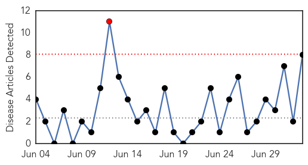
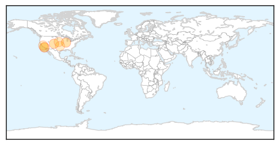
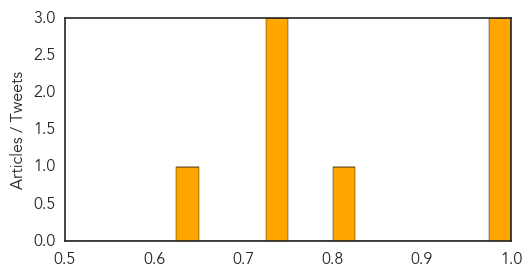

West Nile Virus
30-Day Web Trend
1 alerts, 0 warnings

30-Day Twitter Trend
0 alerts, 0 warnings

Article Locations
Article Confidences
Top Articles:
- 0.996
- Village of Lemont Spraying for Mosquitos Thursday
- 0.989
- Beware the blood suckers: Mosquitoes, ticks, deerflies want to have you for dinner - Oil City
- 0.978
- Health department issues West Nile alert
- 0.802
- Long Beach Health Officials Urge Precaution Against Disease-Carrying Mosquitos
- 0.741
- Long Beach health officials remind residents not to invite mosquitoes to Fourth of July celebrations
- 0.736
- LB health officials remind residents not to invite mosquitoes to Fourth of July celebrations
- 0.735
- KHGI-TV/KWNB-TV/KHGI-CD-Grand Island, Kearney, Hastings
- 0.646
- Third case of West Nile confirmed in Oklahoma
Top Tweets:
-
No tweets found for Jul 03, 2015
MERS
30-Day Web Trend
2 alerts, 16 warnings

30-Day Twitter Trend
4 alerts, 0 warnings

Article Locations

Article Confidences

Top Articles:
- 0.999
- Too many unknowns stymie response to MERS
- 0.996
- Egypt reports first case of MERS virus
- 0.986
- Doctors allay fear over Mers-CoV
- 0.983
- Thai Health Ministry Declares Nation MERS-Free
- 0.981
- Thai health ministry declares nation MERS-free
- 0.976
- First-ever possible treatments for MERS
- 0.926
- Korean in Bacolod negative for MERS-CoV
- 0.922
- Pattaya briefs community leaders on MERS preparedness
- 0.911
- Top Stories
- 0.842
- Korean student cleared of MERS-Cov
Top Tweets:
- 0.667
- AFD Blog `Korea: MERS Cases Moved From Samsung Hospital' MERS-CoV http://t.co/RPk1A0dT6r
- 0.666
- AFD Blog `@WHO MERS Update – Saudi Arabia July 3rd' MERS-CoV http://t.co/GnmvI1aR5T
- 0.592
- AFD Blog `Saudi MOH: 1 Additional MERS Case' MERS-CoV http://t.co/6wBQmBb4M9
- 0.546
- RT: South Korea - New coronavirus MERS cases in past week have all been health care workers (4). :( https://t.co/yi61Pyt3wT